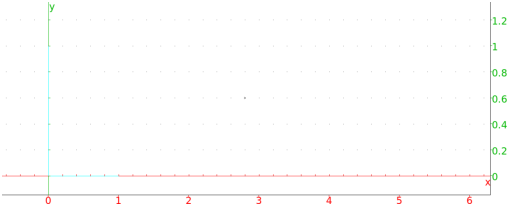

13.17.1 Finding a point dividing a segment in the harminic ratio k: division_point
The division_point command finds a point dividing a segment
is a given ratio.
-
division_point takes three arguments:
-
a,b, two complex numbers or points.
- k, a complex number.
- division_point(a,b,k) returns and draws z where
(z−a)/(z−b) = k.
Examples
-
Input:
division_point(i,2+i,3+i)
Output:

- Input:
affix(division_point(i,2+i,3))
Output: